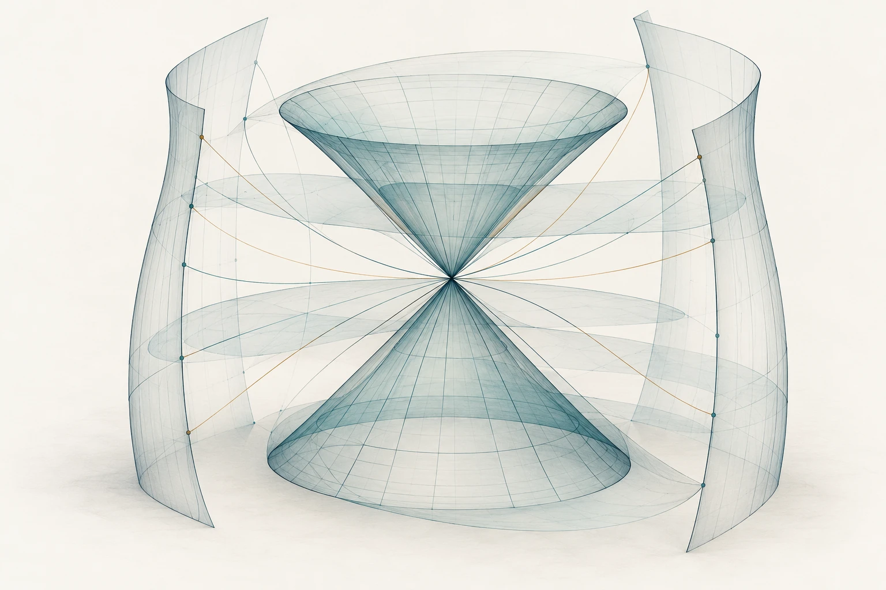

2026Preprint
Fractional Calderón problem with a potential
With Katya Krupchyk, Gunther Uhlmann
University of Toronto · Mathematics
I study inverse problems for partial differential equations, with a focus on the interplay between analysis and geometry.
Research Associate, Department of Mathematics
University of Toronto · St. George

Research
With Katya Krupchyk, Gunther Uhlmann
Single-authored
With Katya Krupchyk, Gunther Uhlmann
With Katya Krupchyk
Background
I am a Research Associate in the Department of Mathematics at the University of Toronto, St. George, for September 2026–August 2027. My work concerns the recovery of coefficients and geometry from partial boundary, spectral, and wave data.
Previously, I was an Assistant Professor at the University of Toronto Mississauga, a Simons Postdoctoral Fellow at the Fields Institute, and a Research Associate at University College London.
Teaching experienceAppointments